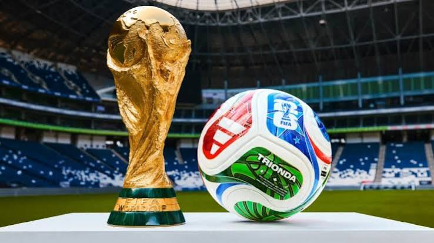

Histórico: O torneio foi criado em 1930 por iniciativa do francês Jules Rimet. A primeira edição aconteceu no Uruguai, e a seleção da casa foi a grande campeã. Desde então, o evento cresceu de forma gigante. O Brasil se tornou a maior potência da competição, sendo o único país a participar de todas as edições e o maior vencedor da história, com cinco títulos mundiais conquistados.
Formato da Competição: As seleções passam por anos de disputas difíceis nas Eliminatórias de suas regiões para garantir uma vaga no torneio principal. Na fase final, os times são divididos em grupos onde jogam entre si. Os melhores avançam para as fases de mata-mata (oitavas, quartas e semifinal) até que restem apenas os dois finalistas que vão decidir quem ergue a taça mais cobiçada do futebol.
Cenário Atual: A competição está passando por sua maior transformação histórica, expandindo o formato tradicional para incluir ainda mais países, o que permite que novas nações realizem o sonho de jogar um Mundial. Além disso, a tecnologia se tornou peça fundamental do jogo moderno, com sistemas de arbitragem por vídeo e sensores de movimento para garantir decisões muito mais justas em campo.
